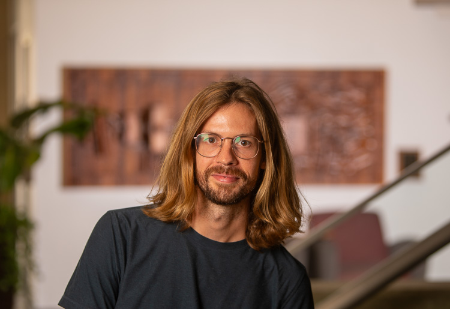

My work explores the intersection of technology, architecture, and ecology, creating meaningful connections between people and their environments.
With an M.F.A. in Integrated Media / Live Design from the University of Texas at Austin and a B.S. in Visualization from Texas A&M University, I've developed a unique approach that combines technical expertise with artistic sensibility. My professional experience includes co-founding Interactive Nature, a live experience design studio, and working as Lead Developer for Simply Sand Play.
My design portfolio spans projection mapping, media design, and interactive installations for venues ranging from theaters and festivals to museums and corporate events. I believe in the power of technology to create emotionally resonant experiences that foster a deeper understanding of our relationship with the natural world and each other.